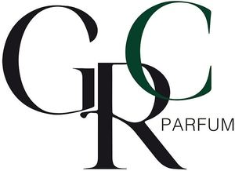

Trade Mark Journal No.2025/012 21 March 2025
WO0000001842547 (3)
Office of origin: Italy
Date of International Registration:20 November 2024
Date of designation in the UK:
20 November 2024

Figurative trademark in colors including the fanciful wording without meaning "GRC" and the wording "PARFUM", whose translation into Italian is "PROFUMO".
Registration of this designation shall give no right to the exclusive use of the word "PARFUM".
The mark contains the colours black and dark green.
Black - letters "G" and "R" and word "PARFUM"; dark green - letter "C".
International priority date claimed: 15 November 2024
(Italy)
(302024000170316)
- Class 3
- Perfumery and toiletries including perfumery and fragrances, fragrance preparations, body fragrances, perfumes, liquid perfumes, solid perfumes, eau de parfum, extracts of perfumes, perfumed toilet waters, eau de cologne, scented water, ethereal essences and oils, oils for perfumes and scents, essential oils and aromatic extracts, perfume oils for the manufacture of cosmetic preparations, essential oils for use in the manufacture of scented products, aromatics for perfumes, aromatics for fragrances, cosmetics, scented body lotions and creams, scented body spray, body and facial gels [cosmetics], facial emulsions [cosmetics], body emulsions, skin cleansing foams; sun creams; soaps and gels [non-medicated], scented soaps, deodorant soap; deodorants for personal use [perfumery], deodorants for human beings or for animals [perfumery]; shower and bath foam, shower and bath gel [non-medicated], aromatic oils for the bath; shaving soap, shaving cream, lotions for beards, after-shave preparations, after-shave emulsions; household fragrances including room perfumes in spray form, room scenting sprays, incense, potpourris [fragrances], scented sachets, air fragrance reed diffusers; refills for electric room fragrance dispensers, fragrance refills for non-electric room fragrance dispensers; sachets for perfuming linen including scented linen sprays, scented linen water, essential oils as perfume for laundry purposes, scented fabric refresher sprays; perfumes for industrial purposes; laundry detergents for household cleaning use.
GRC PARFUM SOCIETA' PER AZIONI SOCIETA' BENEFIT, IN FORMA ABBREVIATA GRC PARFUM S.P.A. S.B.
Representative: RACHELI S.R.L., Viale San Michele del Carso, 4, I-20144 Milano (MI), ITALY